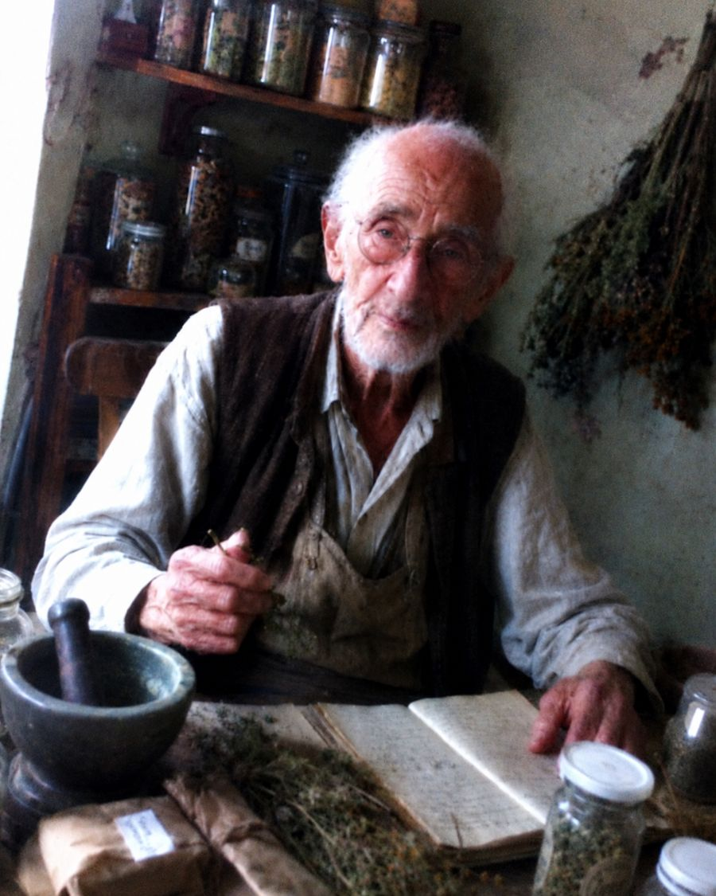
В едно село недалеч от София живее човек, който опровергава всичко, което знаем за стареенето. На 102 години билкарят Кирил Драганов всяка сутрин се разхожда по пътеките над селото, изкачва стълбите без чужда помощ и през целия си живот не е лежал в болница нито ден. Връстниците му отдавна не са между живите или са приковани на легло — а той и до днес сам се качва на баира за билки.
До миналата година дядо Кирил приемаше хора в къщата си, в старата стая, където от десетилетия суши билки. Над 70 години работа с билки, над 40 000 души, хиляди хора с хронични оплаквания и „необясними“ болежки, които лекарите бяха отписали. Имаше листа на чакащи от шест месеца — хората идваха от цялата страна, за да го видят.
Но истинската загадка не са тези, които идваха при него. Истинската загадка е самият той. На 102 години — нито един паразит, никакво хронично възпаление, нито един болен орган. Изследванията на кръвта и червата му изглеждат като на мъж на 45 години. Лекарите, които го преглеждат, просто не вярват на очите си.
Десетилетия пазеше рецептата си в тайна — приготвяше я сам, в своята стая, и никога не я публикува. Но днес, когато здравето вече не му позволява да приема хора лично, дядо Кирил взе решение, което промени всичко: да направи формулата си достъпна за всеки български гражданин.

Дядо Кирил Драганов: „Цял живот наблюдавах как хората се разболяват преждевременно — не защото тялото им е слабо, а защото никой не им е казал кой е истинският враг, скрит в собствените им черва. На 102 години съм живото доказателство, че организмът може да остане чист и здрав до дълбока старост, ако знаеш как да „събудиш“ механизмите, които го чистят от паразити.
МОЯТА ЦЕЛ ВИНАГИ Е БИЛА ЕДНА-ЕДИНСТВЕНА — ДА ПОМОГНА НА ТЯЛОТО САМО ДА ИЗГОНИ ПАРАЗИТИТЕ И ТОКСИНИТЕ, ТОЧНО КАКТО В МЛАДОСТТА. СЕГА СИНЪТ МИ МАРТИН ПРЕВЪРНА ВСИЧКО ТОВА В ПРОДУКТ, КОЙТО МОЖЕ ДА СТИГНЕ ДО ВСЕКИ ДОМ В БЪЛГАРИЯ.“
Д-р Мартин Драганов — синът на билкаря — израсна сред сушените билки и везните на баща си и още от дете учеше занаята. Завърши с отличие Медицинския университет в София и се специализира по инфекциозни болести и паразитология. Години наред изследваше метода на баща си, правеше лабораторни анализи и работеше с международни екипи, за да превърне десетилетния опит на дядо Кирил в съвременен продукт, достъпен за всеки.
Резултатът от това сътрудничество надмина всички очаквания. Но преди да ви разкажа за продукта, нека видим защо почти всичко, което знаете за паразитите, най-вероятно е грешно.
Лъжата, в която вярва цяла България:
„Паразити хващат само децата и мръсните хора“ — ГРЕШКА, те живеят в тялото на всеки втори българин!
Дядо Кирил Драганов:
— Седемдесет години лекувам хора и ще ви кажа нещо, което аптеките никога няма да признаят: нито едно аптечно хапче за глисти не е изчистило докрай нито един организъм. Нито едно! То убива част от възрастните паразити, но яйцата и ларвите остават — само че вие вече не подозирате, че врагът е там. А когато отново се обади, ще бъде твърде късно.
Но това не е най-лошото. Най-лошото е онова, което тези химически вещества правят с вътрешните ви органи. За 70 години работа съм виждал стотици хора с напълно унищожени черен дроб и бъбреци — не от болестта, а от лекарствата! Тялото не е създадено да гълта химия десетилетия наред. И въпреки това точно това „предписва“ конвенционалната медицина.
Особено опасни са паразитите, които напускат червата и се настаняват в черния дроб, в жлъчката, дори в кръвта и в мускулите. Там живеят тихо, без ясни симптоми, понякога с години. Когато оплакванията най-сетне се появят, бедата вече е напреднала. Нелекуваната паразитна инвазия превръща живота в кошмар: започва с лека умора и подуване, а завършва с пълно изтощение и срината имунна система.
Погледнете какво показва това изследване. Жена, едва на 39 години, учителка — а червата ѝ са в състояние, каквото преди 20 години виждах чак при хора на 70. Заседнал начин на живот, преработена храна на крак и пълно незнание какво се случва в собственото тяло — ето какво носи съвременният начин на живот.
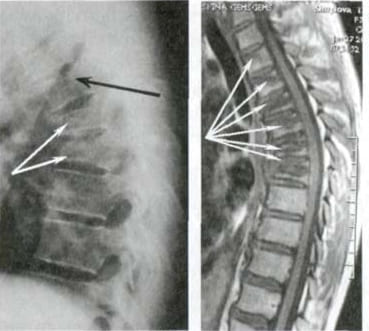
Ако след 40-годишна възраст усещате постоянна умора, подуване или необясними обриви — организмът ви най-вероятно вече е дом на паразити. Това не е „от умора“ и не е „нормално“.
Колкото по-дълго паразитите остават в тялото, толкова по-коварен става процесът — тежките симптоми се появяват едва когато увреждането на органите вече е критично!
Дядо Кирил Драганов:
— Искам да бъда напълно откровен. Познавам хора, които отлагаха с месеци. Резултатът? Паразитите преминаха от червата към черния дроб и оставиха трайно увреждане. Червата и по-късно могат да се изчистят, но съсипаният черен дроб се възстановява много по-трудно — ПАРАЗИТИТЕ МОГАТ ДА СЕ ИЗГОНЯТ, НО СЪСИПАНИЯТ ОРГАН — НЕ ВИНАГИ! А какво остава тогава? ХРОНИЧНА БОЛЕСТ, ПОСТОЯННО ИЗТОЩЕНИЕ И ХАПЧЕТА ДО КРАЯ НА ЖИВОТА!
А какво предлага съвременната медицина? Скъпи и агресивни химически препарати. Лично съм виждал стотици хора, които след силен курс за глисти се чувстваха ПО-ЗЛЕ, отколкото преди. УНИЩОЖЕНА ЧРЕВНА ФЛОРА, ПРЕТОВАРЕН ЧЕРЕН ДРОБ, ХРОНИЧНА СЛАБОСТ И НАКРАЯ — ПОВТОРНО ЗАРАЗЯВАНЕ. А ПОНЯКОГА — НЕОБРАТИМИ УВРЕЖДАНИЯ!
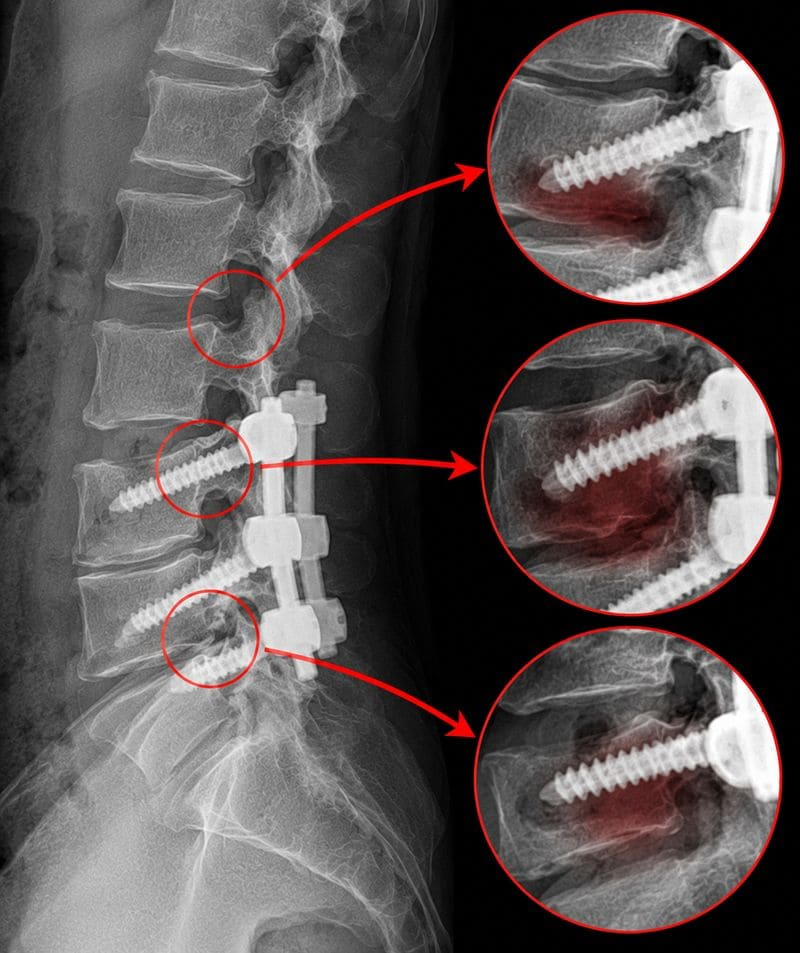
Дядо Кирил показва изследване, което му донесе човек след месеци химически препарати: „Това е типичният резултат — паразитите оцеляха, чревната флора е унищожена, а състоянието е по-лошо, отколкото преди лечението. Виждал съм стотици подобни случаи.“Статистиката е безмилостна: при 60% от тези, които разчитаха само на аптечни хапчета, паразитите се връщат в рамките на няколко месеца. А цената? Съсипано храносмилане, хиляди евро и пълна несигурност. Мнозина признават: ако можеха да върнат времето, никога нямаше да заложат само на химията.
Тези симптоми означават, че в организма ви вече живеят паразити! А ако сте над 40–50 години — без намеса процесът само се ускорява!
— За 70 години през ръцете ми минаха над 40 000 души и мога да кажа следното: всяка пренебрегната паразитна инвазия е крачка към тежко хронично заболяване. — само през тази година в България са регистрирани над 125 000 нови случая на тежки паразитни инвазии — от които 23 000 при хора на възраст от 38 до 48 години. Това не е проблем на хигиената. Това е проблем на бездействието.
Ако организмът ви вече е дал някой от тези сигнали — не чакайте нито ден!
Ето списъка, който казвах на всеки човек още на прага:
- Сутрешна умора, която не минава и след сън;
- Подуване на корема, газове и къркорене след хранене;
- Внезапен глад или силно желание за сладко и тестени храни;
- Тъмни кръгове и торбички под очите;
- Обриви по кожата, екзема, пъпки или необясним сърбеж;
- Алергии и хранителни непоносимости, появили се „от нищото“;
- Скърцане със зъби нощем и неспокоен сън;
- Редуване на запек и разстройство;
- Раздразнителност, нервност и „мъгла“ в главата;
- Чести настинки и отслабен имунитет;
- Необяснимо отслабване или напълняване;
Ако се разпознавате дори в два от тези симптоми — в тялото ви почти сигурно вече живеят паразити. И колкото по-дълго ги пренебрегвате, толкова по-бързо се размножават, защото в претоварените черва намират идеални условия. РЕЗУЛТАТЪТ: ХРОНИЧНО ВЪЗПАЛЕНИЕ, УНИЩОЖЕНА ЧРЕВНА ЛИГАВИЦА, ПРЕТОВАРЕН ЧЕРЕН ДРОБ, СРИНАТ ИМУНИТЕТ — И ВСИЧКО ТОВА МОЖЕ ДА СЕ СЛУЧИ ЗА НЯКОЛКО СЕДМИЦИ! Не отлагайте, защото организмът не ви дава безкрайни шансове!
Погледнете тези хора по-долу. Всеки от тях е имал същите симптоми, които вероятно и вие усещате в този момент. Всеки е казал „ще мине“. И всеки днес би дал всичко, за да върне времето и да действа тогава, когато още е имал шанс.
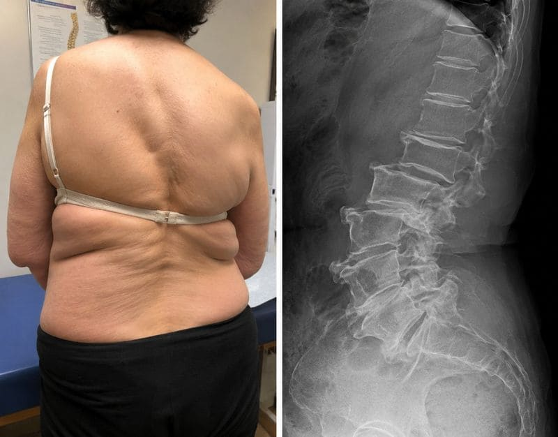
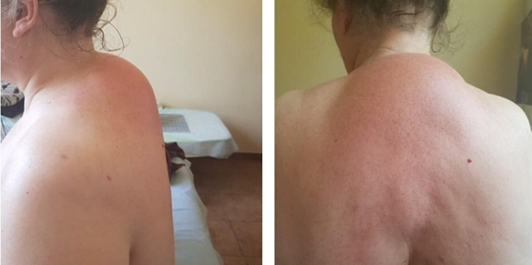
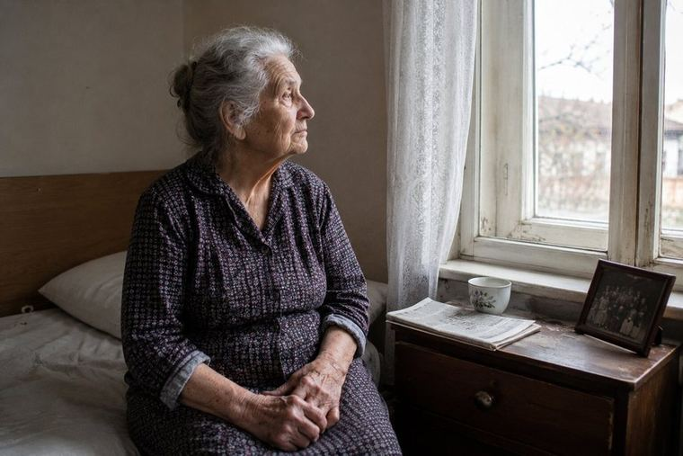
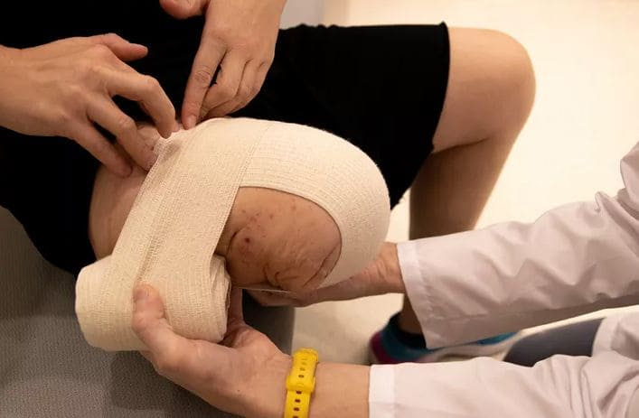
Дядо Кирил Драганов:
На 102 години съм и мога да ви кажа от личен опит: организмът е способен сам да се изчисти на ВСЯКА възраст — при условие че знаете КАК да го задействате. Точно на това посветих живота си. А АКО ВЕЧЕ СТЕ НАД 50–60 ГОДИНИ, НЕ ЧАКАЙТЕ НИТО СЕКУНДА! При вас инвазията почти сигурно е влязла в критична фаза — спешно трябва да я спрете и да задействате прочистването на червата, черния дроб и целия организъм!
Случаи, които лекарите обявиха за безнадеждни! Пенка Марчева, на 86 години, отново сама ходи до магазина, след като три болници я отказаха. Ето нейната история…
Пенка Марчева от Велико Търново страдаше от тежко изтощение, постоянно подуване и обриви по цялото тяло. Три различни болници я отказаха — навсякъде ѝ казваха едно и също: „На тези години вече нищо не може да се направи.“ Дъщеря ѝ случайно чу за дядо Кирил от познати от едно село недалеч от София и реши да го потърси.
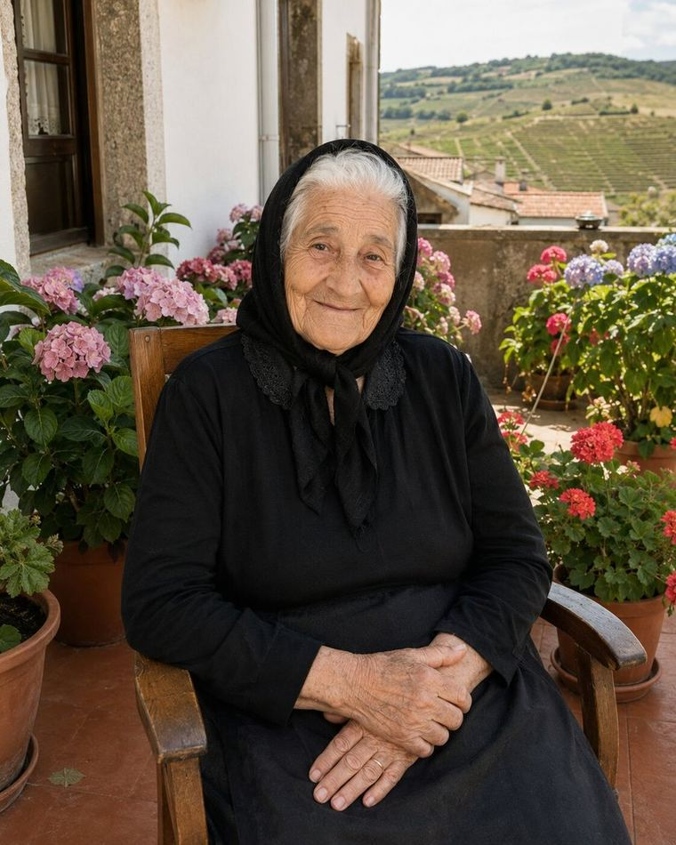
„Живеех като в затвор — собствената ми къща стана килия. Не можех да стигна до кухнята, не можех да стоя права повече от минута, не можех да си направя дори чай. Децата ми работеха и не можеха да идват всеки ден. Лежах и гледах в тавана. Лекарите казаха, че на тези години това е нормално, и ми дадоха само витамини.
Когато дъщеря ми ме заведе при дядо Кирил, той ме погледна и ми каза нещо, което нито един лекар не ми беше казал: ‚Госпожо Пенке, тялото ви НЕ е спряло да се бори. Просто досега никой не му е помогнал.‘ Даде ми онова, което сам приготвя, и ми каза да бъда търпелива. На третата седмица, за първи път от година и половина, СТАНАХ САМА от леглото!
Днес, пет месеца по-късно, ходя до магазина, готвя, дори се грижа за цветната градинка пред блока. На 86 години! Когато съседите ме видяха в двора, не повярваха. Мислеха, че повече няма да ме видят. Дядо Кирил ми върна живота — и нямам думи, с които да му благодаря.“
Пенка Марчева, 86 години, Велико ТърновоДруг изключителен случай е Иван Бончев — строител на 47 години от Плевен, който след 20 години тежък физически труд и хранене на крак получи тежка паразитна инвазия и възпаление на червата и месеци наред не можеше да работи.
Иван изпробва метода на дядо Кирил, а резултатите шокираха дори личния му лекар. ЧЕРВАТА МУ СЕ ВЪЗСТАНОВИХА, БОЛКАТА И ПОДУВАНЕТО ИЗЧЕЗНАХА НАПЪЛНО, А НАЙ-НЕВЕРОЯТНОТО — ВЪРНА СЕ НА РАБОТА СЛЕД САМО 4 СЕДМИЦИ!
Иван ни разказа:
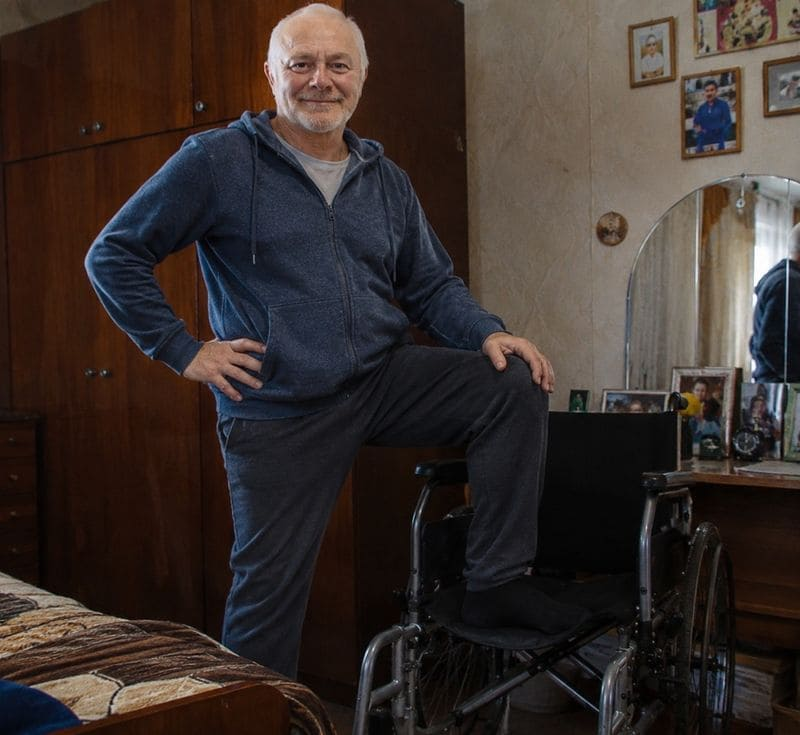
„Двадесет години строих сгради, но изобщо не внимавах какво ям. Една сутрин се събудих със силни болки в корема и не можах да стана. Жена ми повика Спешна помощ. Диагнозата — обширна паразитна инвазия и възпаление на червата. Лекарите предложиха изследвания и курс за 6 000 евро, но без гаранции.Месеци наред лежах вкъщи без сили. Децата ме гледаха с тъга, жена ми плачеше всяка вечер. Чувствах се като бреме. Искаше ми се да изчезна…
Тогава тъстът ми чу за дядо Кирил от човек, на когото беше помогнал. Обадих се, изпратих изследванията и старецът каза: „Не е късно.“ Тези три думи ми дадоха повече надежда, отколкото всичко, което бях чул от десетки лекари.
На четвъртия ден вече се хранех нормално. Пълният курс продължи 80 дни. Днес отново работя — не на строежа, а в офиса, но С ПЪЛНИ СИЛИ. Тичам с децата в парка. Живея. Изследванията показват, че организмът ми е чист на 90%. Дядо Кирил е единственият, който не ме отказа — и единственият, който ми помогна.“
Историите на хилядите хора, на които е помогнал дядо Кирил, са също толкова смайващи: хора, на които лекарите казваха „свикнете“, отново се хранеха нормално, отново работеха, отново заживяха. Как е възможно това?
Формулата, която дядо Кирил приготвяше със собствените си ръце повече от 40 години! Тайната на метода „Ендогенно антипаразитно прочистване“ — как организмът сам започва да изгонва паразитите и да възстановява червата!
Дядо Кирил Драганов:
— Позволете ми да ви обясня нещо, което конвенционалната медицина отказва да признае. Организмът на всеки човек — дори на 90-годишен — притежава защитни механизми, които в младостта лесно са изхвърляли всеки паразит и всеки токсин. С годините те не умират — просто „заспиват“, защото организмът спира да им изпраща правилните сигнали.
Преди 40 години открих, че определена комбинация от билки — в строго определени пропорции — действа като „ключ за запалване“ за тези приспали механизми. Нарекох метода „Ендогенно антипаразитно прочистване“ — защото не внася нищо изкуствено, а активира собствените ресурси на организма. Точно затова при мен НЯМА нежелани реакции, НЯМА увреждане на органите и НЯМА зависимост.
Четири десетилетия прилагах този метод при всеки, който идваше на прага ми — и при всеки отбелязвах един и същ резултат: спиране на инвазията, извеждане на токсините и постепенно връщане на силите. Стотици хора, които идваха при мен „като последен шанс“, си тръгваха от дома ми на собствените си крака.
Самата формула не е сложна — но прецизността е всичко. Всяка билка трябва да бъде в точно количество, до стотна от милиграма. Ако пропорциите не се спазват, ефектът просто изчезва. Точно затова десетилетия наред приготвях сместа лично — защото не можех да я поверя на аптеките.
Състав на капсулите по рецептата на билкаря Драганов (активни вещества на дневна доза):
- Артемизинин едногодишен пелин (Artemisia annua): екстракт 3800 mg
- Кукурбитин тиквено семе (Cucurbita pepo): екстракт 4500 mg
- Юглон зелена обвивка от черен орех (Juglans nigra): екстракт 2400 mg
- Евгенол карамфил (Syzygium aromaticum): екстракт 1200 mg
- Берберин кисел трън (Berberis vulgaris): екстракт 1100 mg
- Етерично масло вратига (Tanacetum vulgare): екстракт 600 mg
- Папаин папая (Carica papaya) 100 000 U/g: 400 mg
Тези билки изглеждат прости, но намирането им в подходящо качество и от правилния източник е изключително трудно. Повечето ги няма в аптеките и трябва да се доставят от различни краища на света. А смесването у дома е практически невъзможно — защото дозирането трябва да е точно до 0,1 mg.
Точно затова десетилетия наред приготвях сместа лично, за всеки човек поотделно. Но синът ми Мартин видя цялата картина.
Как д-р Мартин Драганов превърна 40-годишната рецепта на баща си в капсули, достъпни за всеки — Parazol
Д-р Мартин Драганов:
— Израснах в стаята с билките на баща ми. Всеки ден гледах как хората влизат изтощени и болни — и излизат усмихнати. На 14 години вече знаех рецептата наизуст. Но едва когато завърших Медицинския университет в София и започнах да работя с международни научни екипи, разбрах колко уникално е онова, което баща ми е създал.
Пет години обикалях лаборатории в София и Мюнхен, докато разбера ЗАЩО формулата на баща ми работи толкова добре. Отговорът ме порази: комбинацията от тези билки в точни пропорции парализира паразитите, разгражда яйцата и ларвите им и същевременно свързва токсините, които те отделят. С други думи: организмът буквално „си спомня“ как да се изчисти, просто му трябва правилният сигнал.
Заедно с лабораторията разработихме процес, който нарекохме „Технология на нанодифузия с усъвършенствана биоусвоимост“ — метод, при който активните вещества се затварят в специални наночастици, които преминават непокътнати през стомаха и през чревната стена и кръвта стигат директно там, където паразитите са се загнездили. Това повишава усвояването с около 380% в сравнение с обикновените билкови чайове и отвари. Продукта нарекох Parazol — капсули, които се приемат през устата и действат точно там, където е необходимо. Нарекох го в чест на баща ми и неговите 40 години труд.

Капсулите Parazol съдържат и седемте билки от оригиналната рецепта на баща ми, плюс 29 допълнителни екстракта и витамини, които добавихме след лабораторните изследвания в Мюнхен. Резултатът са капсули, които работят ТОЧНО ТОЛКОВА ДОБРЕ, колкото онова, което баща ми приготвяше със собствените си ръце — но могат да бъдат доставени във всеки дом в България. Приемате ги два пъти дневно, а активните вещества стигат до червата и кръвта, там, където се крият паразитите.
„Parazol е наследството на баща ми — неговият 40-годишен опит, затворен в една формула. Всяка билка е подбрана с прецизността, с която той подхождаше към всеки човек, дошъл на вратата му. Това не е масов продукт от аптеката — това е дело на цял един живот, посветен на изцелението.“
Най-невероятното при Parazol е това, че не само облекчава оплакванията — а задейства механизма на прочистване, който е заспал с годините. Капсулата се приема през устата, а наночастиците пренасят активните вещества дълбоко в чревната стена и кръвта — там, където обикновените хапчета никога не стигат. Синергията между билките усилва ефекта до 20 пъти в сравнение с отделното им приемане.
Четирите фази на прочистването с Parazol — какво се случва в организма ви стъпка по стъпка
Дядо Кирил Драганов:
— През целия си живот като билкар наблюдавах как хората преминават през едни и същи четири фази. Синът ми ги документира и ги вгради в Parazol, така че всеки да може да ги премине у дома.
Четирите фази на „Ендогенното антипаразитно прочистване“:
- Фаза 1 — Парализиране на паразитите и спиране на възпалението: Още от първата капсула наночастиците пренасят активните вещества през чревната стена и кръвта директно до заразените тъкани. Паразитите губят способността си да се хранят и да се захващат за чревната стена. Подуването и тежестта видимо намаляват за 24–48 часа — без да се натоварват черният дроб и бъбреците, защото капсулата използва технология на насочено усвояване.
- Фаза 2 — Извеждане и обезтоксяване: Между третия и седмия ден парализираните паразити, яйца и ларви напускат тялото по естествен път. Токсините, които те са отделяли с години, се свързват и се изхвърлят. Подуването и газовете намаляват, тежестта в корема изчезва.
- Фаза 3 — Възстановяване на чревната лигавица: Това е сърцето на метода. Клетките на увредената чревна лигавица получават биохимичен сигнал и започват да се обновяват, а здравата чревна флора се връща. Усвояването на храната се нормализира и силите се връщат. Точно тази фаза прави Parazol уникален — нито един друг продукт не активира този механизъм.
- Фаза 4 — Трайна защитна бариера: След 30–60 дни обновената лигавица и здравата флора изграждат среда, в която паразитите вече не могат да се загнездят. Дядо Кирил нарича това „имунитет срещу паразити“ — веднъж постигнат, ефектът се задържа с години.
Всяка от тези фази е резултат от 40 години опит на един човек и 5 години лабораторни изследвания. Parazol не предлага бързо „маскиране“ на оплакванията — а задейства дълбок, биологичен процес на прочистване, който връща организма в състоянието, в което е бил преди десетилетия.
Резултати, които изненадаха медицинската общност — проследяване на 2340 души на възраст от 38 до 89 години
Д-р Мартин Драганов:
— Когато публикувахме първите резултати от лабораторните изследвания, реакцията беше светкавична. Университетски клиники от София, Берлин и Виена поискаха да проведат собствени проучвания. Резултатите при реални хора надминаха дори нашите очаквания — нито един от съществуващите методи на лечение не се доближава до тези показатели.
Хора, които с години пиеха хапчета без резултат, се изчистиха напълно. Хора, които с месеци не ставаха от леглото от слабост, отново се върнаха на работа. Лекарите не вярваха на собствените си изследвания.
Резултати от проследяването на „Parazol“ при 2340 души на възраст от 38 до 89 години
| Пълно извеждане на възрастните паразити и ларвите | 100% |
| Изчезване на хроничната умора и изтощението | 94,7% |
| Подуване, газове, храносмилателни оплаквания | 96,3% |
| Прочистване на черния дроб и жлъчните пътища | 97,8% |
| Обриви по кожата, екзема, сърбеж | 98,1% |
| Възстановяване на увредената чревна лигавица | 87,2% |
| Нормализиране на телесното тегло | 93,6% |
| Неспокоен сън, скърцане със зъби нощем | 95,4% |
| Повтарящи се алергии и чести настинки | 91,8% |
| Лабораторно потвърдена липса на паразити | 98,3% |
Точни срокове за прочистване с „Parazol“:
Други научни екипи в Европа се опитват да възпроизведат нашата формула, но досегашните резултати са далеч от нашите. Технологията на нанодифузия с усъвършенствана биоусвоимост, разработена заедно с нашата лаборатория, все още не може да бъде повторена — точно тя позволява на капсулите да доставят билките през чревната стена и кръвта до самите паразити, вместо просто да преминат през храносмилателния тракт.
Колко време отнема пълното прочистване? Дядо Кирил обяснява въз основа на 70 години опит
Дядо Кирил Драганов:
— Минималният курс, който препоръчвам, е 30 дни. При по-тежки инвазии — 60, а понякога и 90 дни. Но за цялата си практика НЕ СЪМ ИМАЛ НИТО ЕДИН СЛУЧАЙ, в който методът да не е дал резултат. Нито един. А съм лекувал хора на 85, 90, дори на 94 години.
Parazol не само облекчава оплакванията — задейства процес на дълбоко биологично прочистване. Приемайте капсулите два пъти дневно и още в първите часове ще усетите облекчение. В рамките на една седмица ще забележите, че подуването е спряло. А след пълния курс организмът ви ще бъде в състоянието, в което е бил преди 20–30 години. Но най-ценното е нещо друго: ефектът е ТРАЕН. Веднъж прочистени, червата с години сами се пазят от повторно заразяване!
Благодарение на „Parazol“ над 19 000 души в България се освободиха от паразити. Ето само малка част от онези, на които е помогнал дядо Кирил:
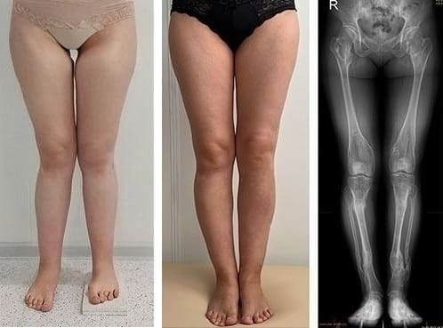
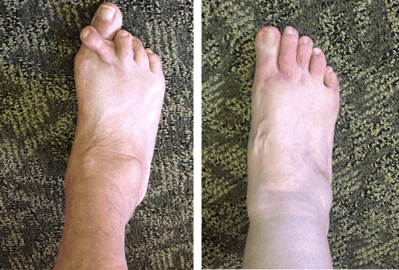
Дядо Кирил Драганов:
— Тези снимки не са чудеса — те са природа и търпение. Всеки от тези хора си върна нещо, за което лекарите му бяха казали, че е невъзможно: чист организъм и живот без болести. Parazol Е КОРОНАТА НА ЦЕЛИЯ МИ ЖИВОТ КАТО БИЛКАР — И МОЕТО НАСЛЕДСТВО ЗА БЪДЕЩИТЕ ПОКОЛЕНИЯ!
Защо дядо Кирил вече не приема хора — и как Parazol стана единственият начин да се стигне до неговата рецепта „Здравето вече не ми позволява да приемам болни лично. Но моята формула ще продължи да лекува — чрез ръцете на сина ми.“
Дядо Кирил Драганов:
— Миналата година взех най-трудното решение в живота си: да не приемам повече хора. Листата на чакащите имаше над 2000 имена — и не можех да ги оставя без помощ. Затова позволих на сина си Мартин да изнесе рецептата там, където ще я направят за всички. Сега съм спокоен — Parazol е точно това, което давах на хората, идващи при мен, само в удобна форма. Рецептата е в сигурни ръце.
Д-р Мартин Драганов: — Parazol не се продава в аптеките — производственият процес е сложен, а количествата са ограничени. Достъпен е само чрез онлайн програмата, два пъти годишно. Но в рамките на програмата отстъпките достигат 50% — защото нашата цел не е печалба, а достъпност. Особено за пенсионерите, за които баща ми настояваше да има максимална отстъпка.
За да се запишете, използвайте официалния формуляр за поръчка по-долу — той идва директно от производствения екип на д-р Мартин Драганов.
Не пропускайте последната възможност тази година — Parazol може да свърши преди края на програмата!
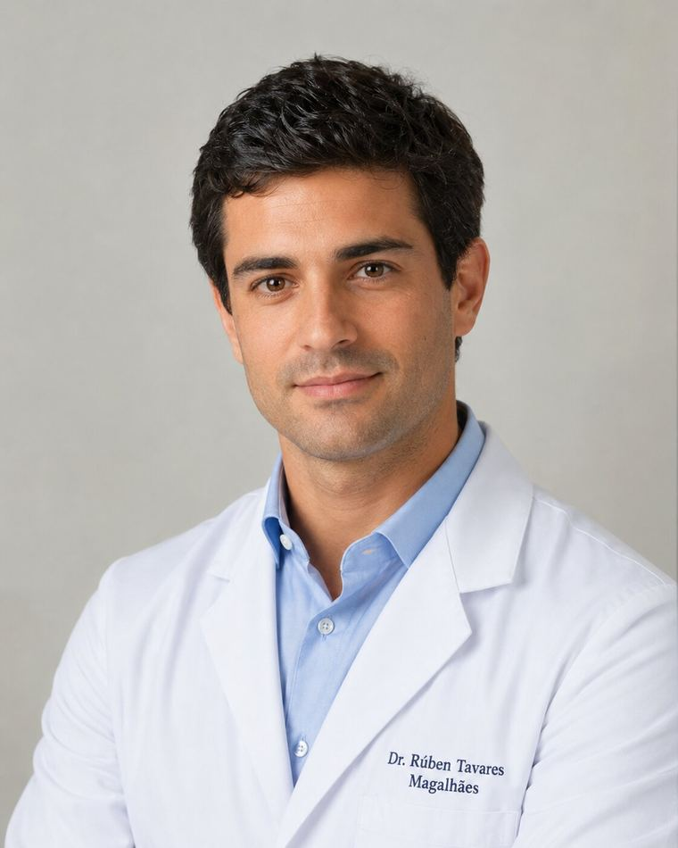
Д-р Мартин Драганов:
— Тази година успяхме да произведем 5 000 опаковки капсули Parazol специално за хората от България. Но предвид търсенето — което е огромно — тези количества ще свършат бързо. Следващата серия ще бъде готова чак в края на 2027 година.
Програмата за подкрепа е активна до следната дата: — дотогава всеки жител на България над 40 години може да получи до 50% отстъпка. След тази дата ще трябва да чакате поне 6 месеца за нова възможност.
Не отлагайте. Баща ми винаги казваше на хората: „Паразитите не ви чакат — те се размножават всяка секунда.“ Докато програмата е активна, използвайте я. Parazol има кумулативен ефект — един пълен курс стига за 5–6 години чист организъм.
Просто въведете име и телефонен номер във формуляра. Консултант ще ви се обади, ще изготви индивидуална програма за вашия случай и ще организира доставка до всеки адрес в България — за 2–3 дни, по пощата или с куриер до вратата ви.
Пожелавам на всички здраве! Прочистете организма си днес, за да живеете здрави утре! С уважение: Кирил Драганов и синът му д-р Мартин Драганов.
Обновено: : Поради изключително голямото търсене наличностите от Parazol може да свършат преди планирания край на програмата! Днес — — е последният ден за поръчка с отстъпка или до изчерпване на количествата.

Внимание! Не затваряйте и не опреснявайте страницата — капсулите Parazol, запазени за вас, ще бъдат предложени на следващия от листата на чакащите!
Вашето запазено място в програмата: № 19 974по пощата или с куриер до вратата ви

КОМЕНТАРИ:
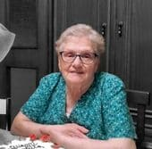
Марияна Бонева
Месеци наред чаках този текст! Една приятелка от София беше лично при дядо Кирил преди няколко години — казваше, че е чудо, а не човек. Жалко, че вече не приема хора, но ако Parazol има същата рецепта — поръчвам веднага. Радвам се, че хванах отстъпката!
Румяна Джамбазова
Куриерът ми ги донесе в сряда. Десет дни пия капсулите сутрин и вечер — и разликата е ОГРОМНА! Изчезна онова ужасно подуване, от което вечер не се събирах в дрехите си! Мъжът ми гледа и не вярва. Ще изкарам пълния курс от 60 дни, но вече съм убедена, че действат.

Йорданка Стаматова
На 72 години съм и три години ме мъчеха постоянни болки в корема и умора. Всяка сутрин ставах по-уморена, отколкото си бях легнала. Лекарят каза: „възрастта е такава.“ Не приех. Parazol ми помогна за два месеца — сега вървя по километър и половина всеки ден! А изследванията показват подобрение, което личният ми лекар не може да обясни. Благодаря, дядо Кириле, и на сина ти!
Красимир Вълков
Като бивш спортист знам какво значи тялото да не те слуша. Чувствах се като човек на 90 години — а съм само на 54. Parazol ми върна енергията, която не бях усещал от 10 години. Отново издържам цяла тренировка! Не знам друг продукт, който да постига такова нещо.
Славка Дочева
Малко съм притеснена… Струва ли си? На 66 години съм, постоянно съм подута, уморена и нервна, и нищо не помага. Но толкова пъти съм се разочаровала от разни „чудодейни“ лекарства, че вече ми е трудно да вярвам. Наистина ли помага?
Деян Караиванов
Госпожо Славке, напълно разбирам съмненията — и аз ги имах. Но Parazol е различен от всичко, което съм пробвал досега. Пия го от 5 седмици — и мога да ви кажа, че разликата е като ден и нощ.
Преди след всяко ядене трябваше да легна за два часа. Сега се храня и продължавам, все едно нищо не е било. Поръчайте поне една опаковка и преценете сами — нямате какво да губите!
Габриела Шопова
Три дни след като започнах да пия капсулите, подуването намаля наполовина! Сега е 12-ият ден и вече ставам сутрин без усилие. Ще изкарам пълния курс — вярвам, че след два месеца ще бъда като нова!
Веска Тенева
От два месеца по кожата ми плъзнаха обриви и сърбеж. Ужасих се! Пробвах разни мазила от аптеката — нищо. Но капсулите Parazol са съвсем друго нещо — за 40 дни кожата ми се изчисти почти напълно! Продължавам да ги пия, но вече съм невероятно доволна. Ето как изглежда разликата:
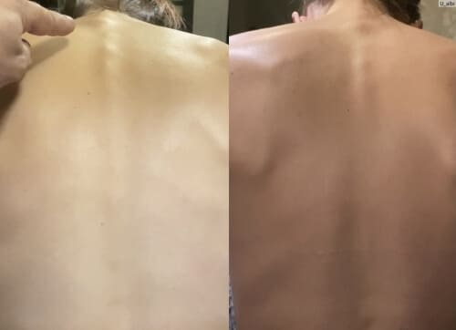
Павлина Гочева
Имах постоянни спазми в корема — от болката не можех нито да спя, нито да се храня нормално. Лекарят ми предписа силни лекарства, от които постоянно ми беше лошо. Започнах да пия капсулите Parazol два пъти дневно — след една седмица болката рязко намаля, а след месец — изчезна напълно! Продължавам курса, но животът ми вече се промени!
Богомил Хаджиев
На 79 години съм и три години нямах сили за нищо. Синът ми поръча Parazol — без да ме пита, защото знаеше, че ще откажа. Дава ми капсулите всяка сутрин и вечер. А резултатът? След месец и половина се разхождам до парка всеки ден! Чувствам се на 60! Благодаря, дядо Кириле — на 102 години си по-мъдър от всички съвременни лекари!
Тодор Гроздев
Преди Parazol сутрин ми беше лошо, а каквото и да изядях, стомахът ми тежеше с часове. Две години обикалях лекари — никой не помогна. Два месеца с Parazol и организмът ми отново работи нормално. Ето моите изследвания — самият лекар не повярва:

Анка Бакалова
Поръчах за свекърва ми — на 81 години е и почти не можеше да става от леглото. Лекарите отказваха да правят каквото и да било — „на тези години нищо повече не помага“, казваха. С Parazol за 2 месеца тя вече ходи из двора и дори готви! Не можехме да повярваме.
Емил Чакъров
Жена ми лежа четири месеца — храносмилането ѝ просто спря. Лекарите предложиха изследвания за 7 500 евро без никаква гаранция. Решихме да пробваме капсулите Parazol — нямахме какво да губим. Давах ѝ ги два пъти дневно. След 5 седмици тя стана. Вчера отидохме заедно на пазара — за първи път от половин година! Плаках от щастие.
Нина Пейчева
Поръчах миналата седмица, получих ги на третия ден. Веднага започнах да ги пия — и облекчението дойде на втория ден! Като че ли някой изчисти тялото ми отвътре. Две седмици ги пия два пъти дневно и вече нямам търпение за пълния резултат!
Ружа Колева
На 74 години съм. Пет години страдах от хронична умора, подуване и алергии. Пробвах буквално всичко — чайове, таблетки, диети, изследвания. НИЩО не помогна в дългосрочен план. Капсулите Parazol са единственото, което ми даде РЕАЛЕН РЕЗУЛТАТ — пия ги два пъти дневно и за месец и половина организмът ми се усеща коренно различно. Лекарят не вярва на изследванията!
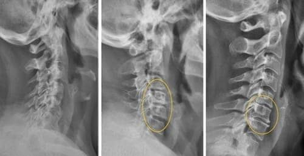
Весела Динкова
Познавам дядо Кирил лично — преди 12 години ми помогна, когато никой не можеше да открие какво ми е. За три седмици отново бях на крака! Името му го знае цялата околност на София. Радвам се, че синът му продължава делото!
Гроздана Терзиева
Баща ми е на 84 години и три години не излизаше от къщи. Постоянна слабост, подуване, никакъв апетит. Казваше, че чака да си отиде. След два месеца с Parazol — вчера излезе в двора и поля градината! За първи път от три години! Не мога да опиша какво почувствах. Благодаря от сърце!!!
Магдалена Влахова
Знае ли някой дали може да се пие при алергии? Реагирам почти на всичко — дори от обикновен аспирин ми се подуват пръстите. Страхувам се да пробвам нещо ново…
Спас Мутафчиев
Магдалена, аз съм алергичен към четири вида лекарства. Пия капсулите Parazol от 50 дни — никакво дразнене, никакво подуване, никакво зачервяване. Съставът е изцяло от билкови екстракти — не съдържа химия. Спокойно можете да поръчате!
Дора Балканска
Преди нямах сили да стана — всяко движение беше мъка, мислех, че животът ми е свършил. Дъщеря ми поръча капсулите Parazol и ме накара да ги пробвам — даваше ми ги сутрин и вечер. Два месеца по-късно? Танцувах на сватбата на внука си!!! Никога през живота си не съм била толкова благодарна!

Севда Манолова
Поръчах за майка ми. Имаше постоянно гадене и подуване, от които ѝ прилошаваше и ѝ се виеше свят — животът ѝ беше станал непоносим. През втората седмица с Parazol оплакванията рязко намаляха, а световъртежите спряха напълно! Мама отново се смее — отдавна не я бях виждала такава.
Цветанка Пантева
Питам се — щом дядо Кирил е толкова добър, защо тези неща не се продават навсякъде? Защо само онлайн? Защо аптеките не ги предлагат?
Михаил Радулов
Защото аптеките печелят от хората, които купуват хапчета всеки месец! Ако всички се изчистеха от паразити веднъж завинаги — кой щеше да им купува скъпите лекарства? Помислете логично!
Емилия Кацарова
Прочетох всички коментари — и се разчувствах. Поръчвам сега, за себе си и за мъжа ми. Взех три опаковки, за пълен курс. Ако помогне дори наполовина на това, което пишат хората — ще бъда щастлива!
Надежда Тошева
Личният ми лекар каза, че на 63 години умората и подуването са „нормални“ и трябва да свикна. Поръчах Parazol напук на всички. Ще видим кой е прав!